Places gallery, 2026-10-13
Each strip: the start, the harbour from the sea, the island from the air, the far side from the water, down over the harbour. review.json says what reads as a new place.
reference
a large island (one summit, high peaks), palms on basalt, a wide white beach facing south, a pier, a pastel town, a large reef, lagoon water · asked: nothing (the seed alone)
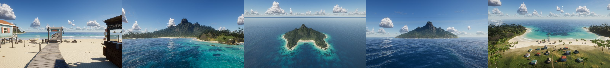
seed-201
a medium island (one summit, high peaks, 2 islets), a smooth coast, some cliffs, palms on basalt, a narrow dark beach facing 160°, a jetty, no village, a large reef, deep water · asked: nothing (the seed alone)
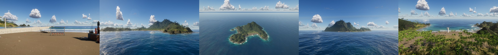
seed-202
a small island (a long ridge, low peaks, 1 islet), a rugged coast, 1 cove, sheer cliffs, cliffs on basalt, a narrow dark beach facing 312°, a pier, a bright hamlet, no reef, deep water (seen morning) · asked: size=small, peaks=low, beach=narrow, village=hamlet, time=morning
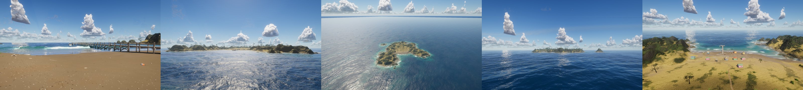
seed-203
a medium island (one summit, high peaks), a rugged coast, jungle on basalt, a narrow white beach facing west, a pier, a pastel hamlet, a small reef, deep water · asked: size=medium, bay=w, plants=lush, reef=small, coast=rugged
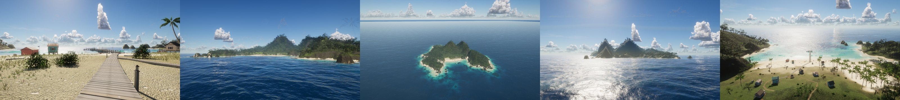
seed-204
a large island (a flat-topped table mountain, high peaks, 2 islets), a rugged coast, 1 cove, a river mouth, some cliffs, scrub on limestone, a wide golden beach facing 349°, a jetty, a terracotta hamlet, a small reef, flat water (seen noon) · asked: size=large, shape=plateau, peaks=high, beach=wide, village=hamlet, time=noon
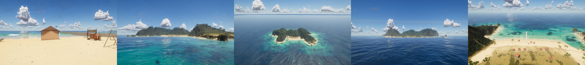
seed-205
a small island (twin peaks, high peaks, 1 islet), a smooth coast, jungle on basalt, a narrow dark beach facing east, a dock, a terracotta hamlet, no reef, flat water (seen storm) · asked: size=small, peaks=high, bay=e, reef=none, weather=storm
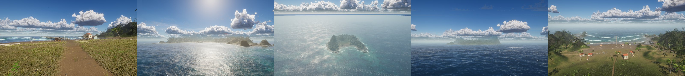
seed-206
a small island (one summit, low peaks), a rugged coast, 1 cove, scrub on basalt, a narrow white beach facing 298°, a jetty, a whitewash hamlet, a large reef, flat water · asked: nothing (the seed alone)
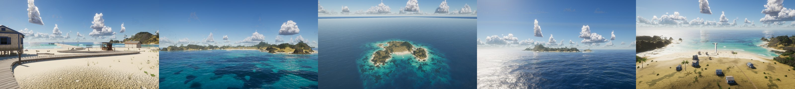
seed-207
a large island (one summit, high peaks, 3 islets), a rugged coast, 1 cove, a river mouth, palms on basalt, a narrow white beach facing north, a jetty, a terracotta hamlet, no reef, deep water · asked: size=large, bay=n, beach=narrow, reef=large, river=yes
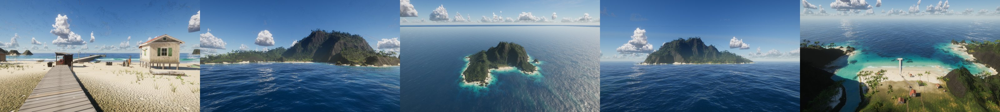
seed-208
a medium island (a low ring round a lagoon, high peaks), a rugged coast, 1 cove, palms on basalt, a wide white beach facing 37°, a dock, a whitewash hamlet, a small reef, lagoon water (seen sunset) · asked: size=medium, peaks=high, village=hamlet, plants=lush, time=sunset
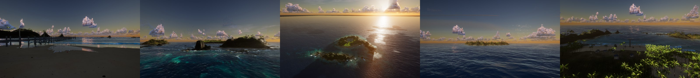
seed-209
a medium island (among bigger islets, high peaks, 3 islets), a coves coast, 2 coves, a river mouth, jungle on basalt, a narrow dark beach facing 211°, a dock, a bright hamlet, a large reef, lagoon water · asked: shape=archipelago, village=hamlet, water=lagoon
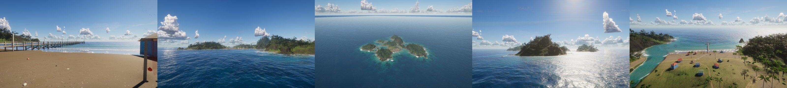
seed-210
a small island (among bigger islets, low peaks, 2 islets), a smooth coast, a river mouth, sheer cliffs, cliffs on basalt, a narrow dark beach facing 134°, a dock, a bright town, no reef, deep water · asked: nothing (the seed alone)
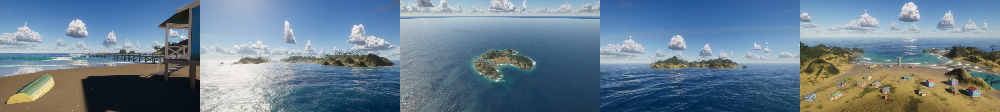
seed-211
a large island (sheer cliffs on one side, high peaks, 3 islets), a rugged coast, a river mouth, sheer cliffs, scrub on limestone, a narrow golden beach facing 151°, a dock, a timber hamlet, a small reef, lagoon water (seen golden) · asked: size=large, peaks=high, beach=narrow, village=hamlet, plants=lush, river=yes, time=golden
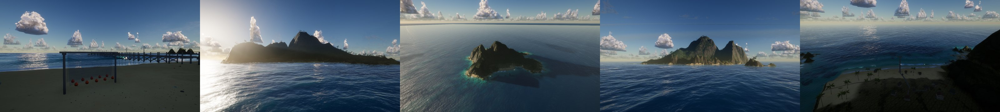
seed-212
a medium island (a volcano with a rock spire, high peaks, 2 islets), a smooth coast, sheer cliffs, cliffs on basalt, a wide white beach facing east, a dock, no village, a small reef, deep water · asked: size=medium, shape=volcano, peaks=high, bay=e, village=none, reef=small, coast=smooth
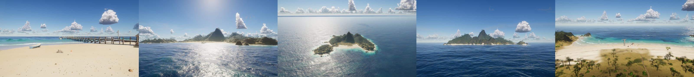
seed-213
a small island (a low ring round a lagoon, low peaks), a rugged coast, palms on limestone, a narrow white beach facing 325°, a jetty, no village, no reef, lagoon water (seen noon) · asked: shape=atoll, pier=jetty, houses=bright, time=noon
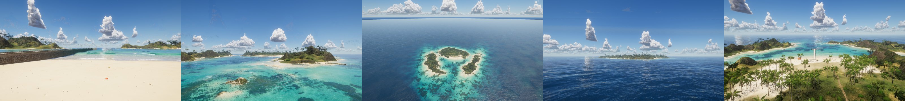
seed-214
a small island (twin peaks, low peaks, 1 islet), a rugged coast, 1 cove, jungle on basalt, a narrow dark beach facing 262°, a jetty, a bright hamlet, no reef, deep water (seen overcast) · asked: shape=twin, sand=dark, rock=basalt, vegetation=jungle, water=deep, weather=overcast
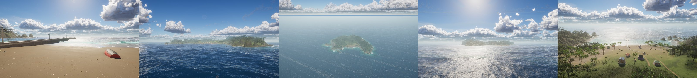
seed-215
a medium island (sheer cliffs on one side, low peaks, 2 islets), a rugged coast, a river mouth, sheer cliffs, cliffs on limestone, a wide dark beach facing 108°, a jetty, no village, a large reef, flat water · asked: shape=cliffs, rock=limestone, vegetation=cliffs, houses=whitewash, coast=rugged
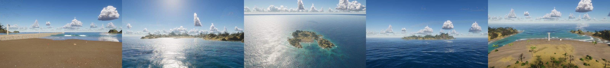
seed-216
a medium island (sheer cliffs on one side, high peaks, 1 islet), a smooth coast, a river mouth, sheer cliffs, jungle on basalt, a narrow dark beach facing 188°, a jetty, a whitewash hamlet, a small reef, lagoon water · asked: nothing (the seed alone)
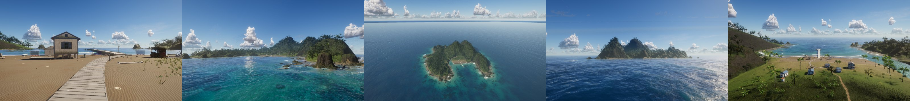
seed-217
a small island (a flat-topped table mountain, low peaks, 3 islets), a rugged coast, a river mouth, scrub on basalt, a wide white beach facing 329°, a pier, a timber town, no reef, flat water (seen night) · asked: size=small, islets=3, water=flat, pier=pier, houses=timber, time=night
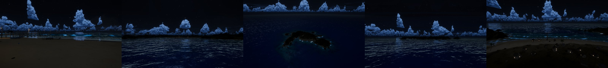
seed-218
a large island (a long ridge, high peaks), a rugged coast, palms on limestone, a narrow golden beach facing west, a jetty, a pastel town, a large reef, lagoon water · asked: shape=ridge, pier=jetty, village=town, houses=pastel, bay=w
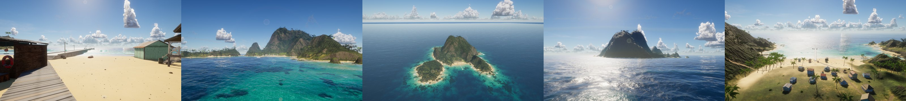
seed-219
a small island (among bigger islets, low peaks, 2 islets), a smooth coast, scrub on basalt, a narrow golden beach facing 77°, a dock, no village, no reef, flat water (seen morning) · asked: shape=archipelago, sand=golden, vegetation=scrub, village=none, time=morning
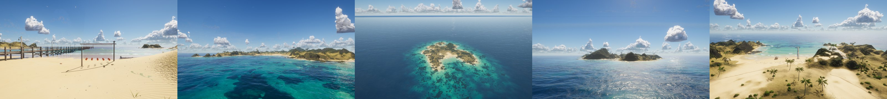
seed-220
a large island (sheer cliffs on one side, high peaks), a rugged coast, 1 cove, sheer cliffs, cliffs on limestone, a narrow white beach facing 150°, a pier, no village, a large reef, lagoon water (seen storm) · asked: shape=cliffs, peaks=high, vegetation=cliffs, village=none, weather=storm, coast=rugged
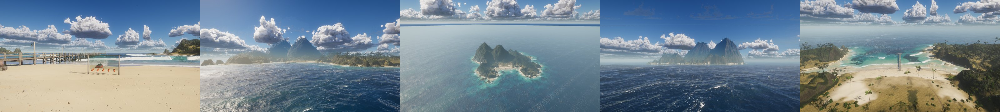
seed-221
a large island (one summit, high peaks, 1 islet), a coves coast, 2 coves, a river mouth, palms on basalt, a wide dark beach facing 124°, a dock, a whitewash town, no reef, lagoon water · asked: size=large, shape=single, river=yes, village=town, houses=whitewash, coast=coves
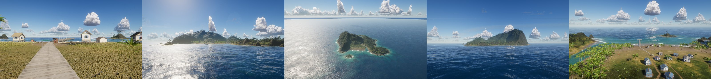
seed-222
a medium island (twin peaks, high peaks, 3 islets), a smooth coast, 1 cove, palms on limestone, a narrow white beach facing 82°, a pier, no village, no reef, lagoon water (seen sunset) · asked: size=medium, shape=twin, sand=white, vegetation=palms, water=lagoon, time=sunset
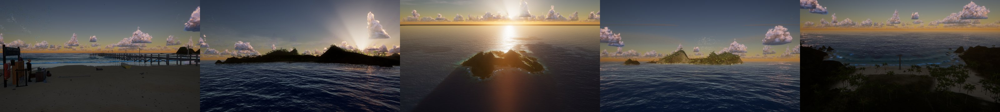
seed-223
a large island (a long ridge, low peaks, 2 islets), a smooth coast, 1 cove, scrub on limestone, a narrow golden beach facing 285°, a dock, a terracotta hamlet, a small reef, lagoon water (seen overcast) · asked: shape=ridge, rock=limestone, vegetation=scrub, sand=golden, coast=smooth, weather=overcast, houses=terracotta, pier=dock
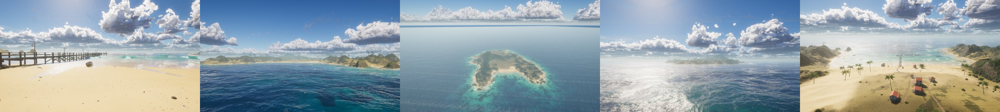
seed-224
a small island (a low ring round a lagoon, low peaks, 2 islets), a rugged coast, 1 cove, palms on limestone, a narrow white beach facing 265°, a pier, no village, no reef, lagoon water (seen night) · asked: size=small, shape=atoll, islets=2, village=none, time=night
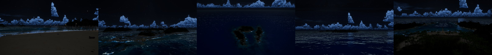